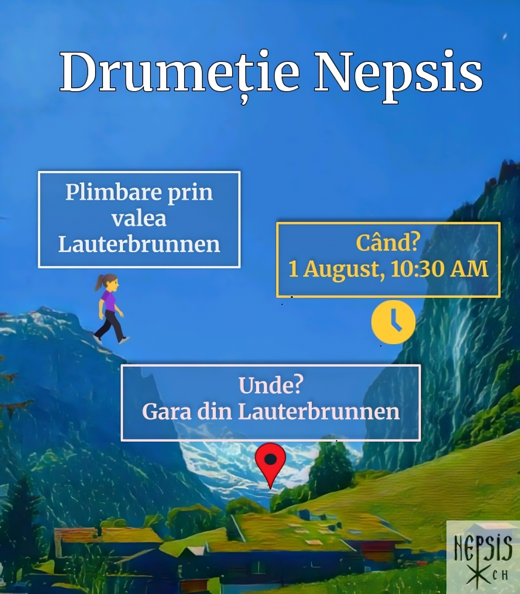

Mai jos aveți următoarele noastre activități. Vă așteptăm cu drag.
1 August: Drumeție Nepsis Elveția

Hai cu noi în Valea Lauterbrunnen
🌲 Drumeție Nepsis – Lauterbrunnen
📅 1 august 2025
🕥 Ora 10:30 AM
📠Gara din Lauterbrunnen
Dragi neptici, Doamne ajută!
Vă invităm cu drag să ne bucurăm împreună de o drumeție prin cea mai spectaculoasă vale din Elveția – Lauterbrunnen.
🚶‍♀ Plimbare ușoară (T1–T2), prin valea Lauterbrunnen, cu opriri la cascadele:
* Staubbach
* Spissbach
* Aegertenbach
* Trümmelbach
🌄 Opțional: putem extinde traseul spre Mürren cu telecabina de la Schilthornbahn.
🽠Posibilitate de prânz/cină împreună.
🎒 Necesar: – Îmbrăcăminte și încălțăminte sportivă
📠Ãnscriere + organizare transport + alte detalii: completează formularul!
⚠Notă: în caz de vreme neprielnică, activitatea poate fi anulată.
Despre Nepsis Elveția
Nepsis este o organizație a tinerilor din Mitropolia Ortodoxă Română a Europei Occidentale și Meridionale, ce își propune să ofere un cadru în care tinerii să se cunoască și să își unească forțele pentru a ține aprinsă flacăra credinței și a tradiției în țările în care locuiesc.
Cu binecuvântarea Înaltpreasfințitului Părinte Iosif (Mitropolitul Europei Occidentale și Meridionale din Biserica Ortodoxă Română), filiala Nepsis Elveția a luat avânt la sfârșitul anului 2018 și îl are ca sfânt ocrotitor pe Sfântul Ioan Casian din Dobrogea, întemeietorul monahismului apusean (sec IV), sărbătorit de Biserica Ortodoxă Română în 29 februarie.
Detalii cont bancar Nepsis Elveția:
IBAN: CH95 0900 0000 1545 2680 8
BIC: POFICHBEXXX
Titular cont: Nepsis Elvetia
Contact
Comunicăm des pe grupurile interne Telegram și Whatsapp - dacă vrei să fii adăugat(ă) la aceste grupuri, dă-ne un mail.
Alte adrese utile:
- nepsis.org
- Mitropolia Ortodoxă Română a Europei Occidentale și Meridionale
- Lista parohiilor ortodoxe românești din Elveția
- Mănăstirea românească "Acoperământul Maicii Domnului" din Elveția
- Adresa centrului de pelerinaje al Mitropoliei:
Copyright Nepsis Elvetia. All rights reserved.